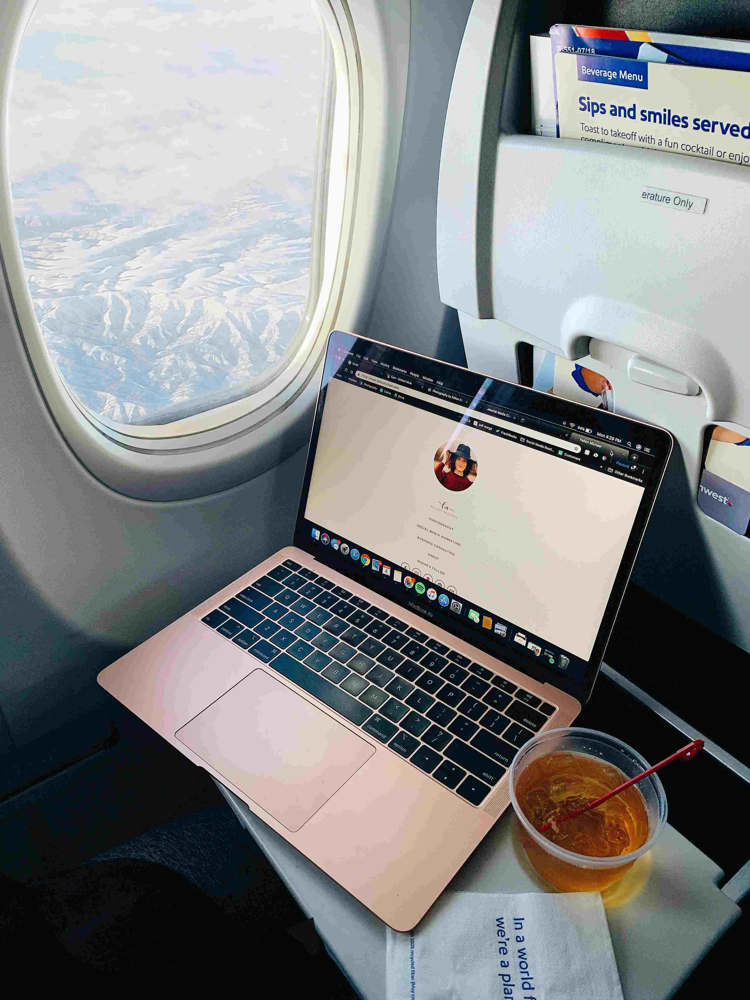

Soy Cami.
Me encanta viajar (¿a quién no?) pero, por sobre todo, me fascina organizar los viajes que hago (excel lover).
Comparto esta linda pasión con Mica, mi compañera de ruta, con quien hice la mayoría de los viajes que comparto acá.
Con el tiempo me di cuenta de lo importante que es despejar la mente de nuestras responsabilidades y, si bien opino que hay que salir de la rutina, le propuse a mis amigas (no hace mucho) armar una "rutina distinta" de actividades diferentes por mes y, sobre esto vas a encontrar en Turistas en BA.